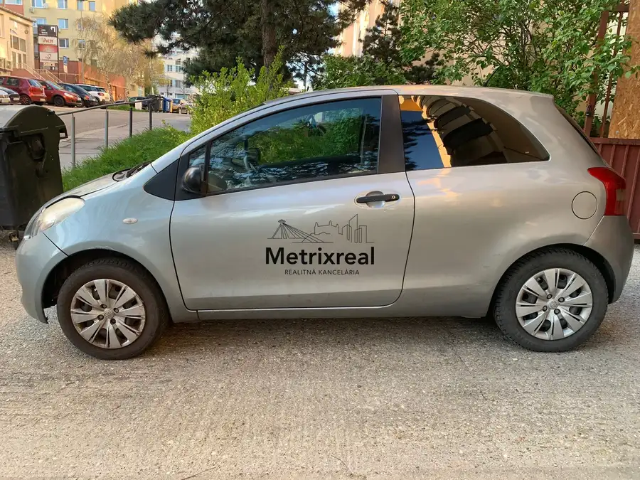
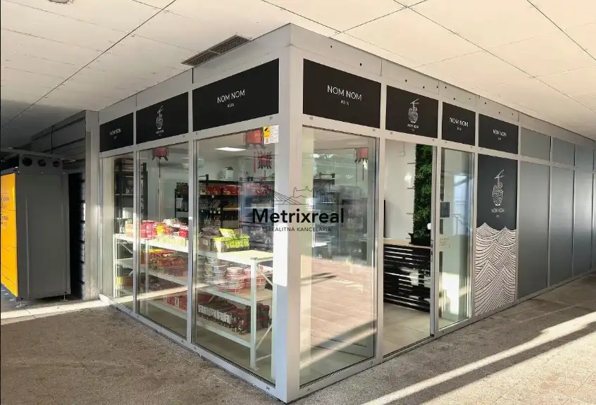
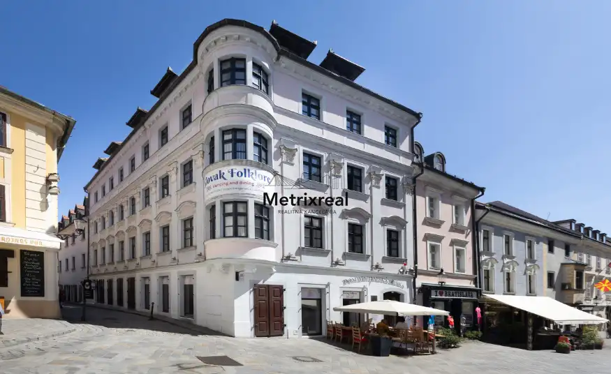

Získajte kanceláriu na Námestí SNP 15: Exkluzívna adresa bez provízie!
Staré Mesto, Bratislava
- Plocha17 m²
- StavČiastočná rekonštrukcia
O nehnuteľnosti
Realitná kancelária Metrixreal Vám na základe poverenia majiteľa ponúka na prenájom praktické a cenovo mimoriadne výhodné kancelárske priestory situované priamo na Námestí SNP v historickom centre Bratislavy – Staré Mesto.V ponuke je viac ako 5 samostatných kancelárií s výmerami od 18 m² do 30 m², ktoré sú pripravené na okamžité využitie. Priestory predstavujú ideálnu voľbu pre jednotlivcov, začínajúce firmy, advokátov, daňových poradcov, účtovníkov, IT špecialistov či menšie tímy, ktoré hľadajú reprezentatívnu a strategickú adresu v pešej zóne za bezkonkurenčnú cenu v Starom Meste.PONUKA VOĽNÝCH KANCELÁRIÍ:K dispozícii viac ako 5 samostatných jednotiekVýmery kancelárií: od 18 m² do 30 m²Možnosť kombinácie: Možnosť prenajať jednotlivé kancelárie samostatne, prípadne spojiť viacero susediacich jednotiek pre väčší tímZÁKLADNÉ PARAMETRE A ŠTANDARD:Lokalita: Námestie SNP, Bratislava – Staré MestoPoschodie: 1-2-3. poschodie (budova disponuje výťahom)Presvetlenie: Svetlé miestnosti s otvárateľnými oknamiZázemie: Spoločné toalety a kuchynka priamo na podlažíTechnické siete: Optická internetová infraštruktúra, štruktúrovaná kabelážPrístup do budovy: Pohodlný a bezpečný prístup pre nájomcov aj návštevy klientovProvízia: 0 € (neplatíte sprostredkovateľskú províziu RK)BENEFITY PRIESTOROV:Bezkonkurenčná cena v Starom Meste: Sadzba už od 10 €/m² robí z tejto ponuky jednu z cenovo najatraktívnejších možností v celom centre Bratislavy.Výber z viacerých priestorov: Možnosť vybrať si konkrétnu výmeru, dispozíciu či orientáciu okien podľa aktuálnych preferencií.Oficiálne sídlo firmy: Reprezentatívna adresa priamo na Námestí SNP zvyšuje kredit a dôveryhodnosť vašej spoločnosti u klientov a partnerov.LOKALITA A DOSTUPNOSŤ:Námestie SNP patrí k najdôležitejším centrám pešieho a spoločenského života Bratislavy:MHD uzol priamo pred budovou: Kľúčové zastávky električiek (linky 1, 3, 4) a v pešej dostupnosti autobusy a trolejbusy (Hodžovo námestie, Zochova, Kamenné námestie).Kompletné inštitúcie na dosah ruky: Banky, pošta, notári, advokátske kancelárie, súdy a mestské úrady v okruhu 5 minút chôdze.Gastro a vybavenosť: Široký výber reštaurácií na pracovné obedy, kaviarní na neformálne stretnutia, pekáreň, potraviny aj lekárne v tesnej blízkosti.CENA A PODMIENKY NÁJMU:Nájomné: od 10 € do 12 € / m² / mesiac (v závislosti od konkrétnej kancelárie a jej výmery) + DPHKancelária 18 m²: od 180 € / mesiac + energie/služby + DPHKancelária 30 m²: od 300 € / mesiac + energie/služby + DPHEnergie a správa budovy: INFO V RK Depozit: Vo výške 2 mesačného nájomného.Doba nájmu: Podla dohody.Sme členom Realitnej únie SR, čo pre Vás predstavuje garanciu transparentného a bezpečného priebehu transakcie.JUDr. Sylvia ČiefováRealitný maklérTel. č.: +421 905 969 655E-mail: ciefova@metrixreal.skRealitná kancelária: Metrixreal s.r.o.Nájdete nás na adrese: Drieňová 34, 821 02 Bratislava – RužinovTel.: 0951 778 117E-mail: kadnar@metrixreal.sk
Parametre
| Doprava | MHD |
|---|---|
| Druh | Administratívny objekt |
| Dátum zverejnenia | 15. 9. 2026 |
| Elektrina | Na pozemku - 230 V |
| Energetický certifikát budovy | nie je |
| Odpadové vody | Na pozemku - Kanalizácia |
| Plyn | Na pozemku |
| Počet nadzemných podlaží | 1 |
| Prístupová komunikácia | Asfaltová |
| Rok výstavby | 1939 |
| Stav nehnuteľnosti | Čiastočná rekonštrukcia |
| Typ | Prenájom |
| Typ konštrukcie | Tehlová |
| Voda | Na pozemku - Diaľkový vodovod |
| Zastavaná plocha | 250 m² |
| Úžitková plocha | 17 m² |
Kde to je


Mohlo by Vás zaujímať

Komerčné priestoryNové5 21 999 €EXKLUZÍVNE: Odstúpim gastro priestor pripravený na denné menu, pizzériu či delivery koncept Karlova Ves, Bratislava 100 m² ZÁKLADNÉ PARAMETRE A HLAVNÉ BENEFITYStav prevádzky: Plne funkčná, (aktuálne fungujúci nočný rozvoz)Možnosti využitia: Varenie denného menu, pečenie…
Komerčné priestoryNové7 12 000 €Podnikaj ihneď bez rizika: Plne vybavené Ázijské potraviny v frekventovanom OD Saratov Dúbravka, Bratislava 38 m² Realitná kancelária Metrixreal Vám na základe poverenia majiteľa ponúka na odstúpenie plne funkčnú a dlhodobo zabehnutú predajňu ázijských potravín,…
Komerčné priestoryNové10 Cena dohodouKancelária na Michalskej bez provízie: Kompaktné priestory s historickým čarom (od 21 m²) Staré Mesto, Bratislava 25.92 m² Realitná kancelária Metrixreal Vám na základe poverenia majiteľa ponúka na prenájom komorné, reprezentatívne kancelárske priestory situované priamo v…